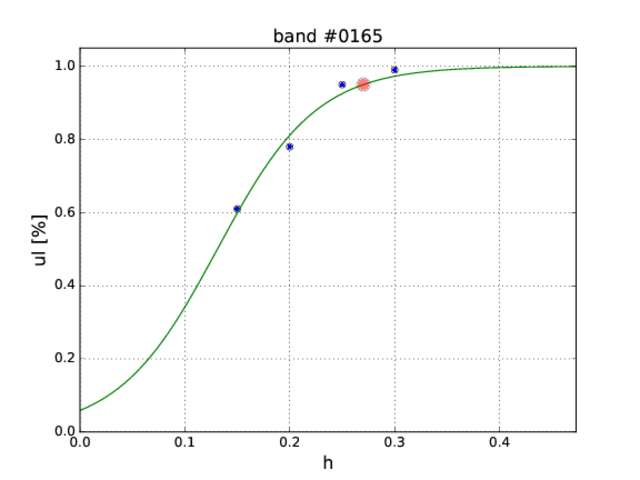

Sensitivity upper limits
This directory contains a set of scripts that prepare and run a pipeline search in a small area in the parameter space around the injected signal.
Prerequisites
The scripts require python3. A working solution is to install a python virtual environment (python3 comes with a built-in pyvenv virtual environment software).
Install python3.4.5 locally
Let's assume the installation directory is
installdir=/path/to/installdirthen
mkdir -p ${installdir}; cd ${installdir}
wget https://www.python.org/ftp/python/3.4.5/Python-3.4.5.tgz
tar zxvf Python-3.4.5.tgz
cd Python-3.4.5
make clean
./configure --prefix=$(dirname "${PWD}")
make -j4
make install
cd ../; rm -fr Python-3.4.5*Create virtual environment
In a selected location (/path/to/venvdir) type
${installdir}/bin/pyvenv venvActivate the virtual environment
. /path/to/venvdir/bin/activate(to leave the environment, type deactivate). You can now install specific packages using the pip installer:
pip install nympy
pip install scipy
pip install matplotlib
pip install pandasRunning the scripts
The steps of the procedure is as follows:
- Chose the GW strain amplitude ,
- Randomly chose other signal parameters (with signal generator sigen)
- Add signal to the data (with the
gwdetect-cpu --addsigfeature) to selected time segments, and perform the search for candidates in each of them (gwdetect-cpu), - Search for coincidences (coincidences)
- Find if the signal was detected (find the highest coincidences for a given band and compare them with the number of time segments analyzed).
The script script.py creates a subdirectory in which the pipeline will be launched based on the following input files:
1. config.ini which contains the paths to codes and the input data, and the parameters of the search:
* F-statistic threshold,
* how many simulations,
* which detectors to use,
* size of the region to search,
* how to perform the search for coincidences etc.
bandlistwhich is a list of bands with strain amplitudes, for example:
0164 2.25e-1
0165 1.5e-1 2e-1 2.5e-1 3e-1
0166 2e-1 4e-1The call is
% python script.py config.ini bandlistTwo other auxiliary files are:
1. Dummy bash script dummy.sh with the actual pipeline calls (variables replaced with actual values by script.py and renamed to script.sh),
2. PBS/Torque script job.sub, launched into the cluster queue and running script.sh (modify it to fit other systems, e.g., the slurm scheduler).
Script script.py creates a run.sh file which contains commands to send the jobs into the queue. The results are summary files (.sum) for the requested number of simulations. In order to process them, call the summary.py script
% python summary.py band coincidence_threshold number_of_simulationsfor example
% python summary.py 0165 0.7 100The result will be something as follows (columns are band number, amplitude h, upper limit ul):
band h ul
0165 0.150 0.61
0165 0.200 0.78
0165 0.250 0.95
0165 0.300 0.99Serial (stacked) version for longer jobs
script2.py creates subdirectories and a job_BAND.sub file for a list of amplitudes for BAND from bandlist, stacked one after another (can be handy to send one band as one job to the queue). Call:
% python script2.sh config.ini bandlistand then (for e.g., band 0165) send it to the queue
% qsub -N 0165 -v howmany=100 job_0165.subThe summary of simulations for a given band (0165, say) processed by the summary.sh result in the following list of h0 amplitudes followed by the corresponding fractions of significant coincidences (N_coin/N):
band h ul
0165 0.150 0.61
0165 0.200 0.78
0165 0.250 0.95
0165 0.300 0.99We are interested in a 95% upper limit i.e. the h0 corresponding to the fraction 0.95 of significant coincidences in the simulation (N_coin/N=0.95). This is obtained by fitting a sigmoid function
def sigmoid(x, x0, k):
y = 1.0 / (1.0 + np.exp(k*(x0-x)))
return yto the above data. Fitting is done by ul.py:
% python ul.py 0165_results 0165 0.01 test.pdf
0165 2.7026e-01The output is the band number and h0 corresponding to the 95% upper limit. Last command-line option test.pdf is optional. It produces the auxiliary plot, with the 95% upper limit is denoted by red circle:
